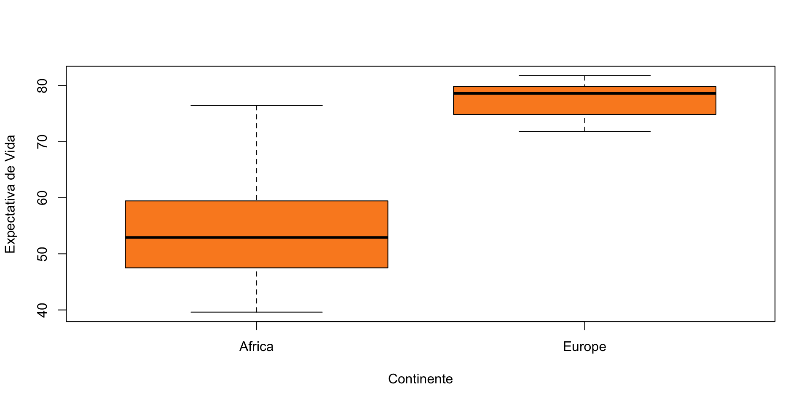

# A tibble: 6 × 6
country continent year lifeExp pop gdpPercap
<fct> <fct> <int> <dbl> <int> <dbl>
1 Afghanistan Asia 1952 28.8 8425333 779.
2 Afghanistan Asia 1957 30.3 9240934 821.
3 Afghanistan Asia 1962 32.0 10267083 853.
4 Afghanistan Asia 1967 34.0 11537966 836.
5 Afghanistan Asia 1972 36.1 13079460 740.
6 Afghanistan Asia 1977 38.4 14880372 786.Ciencia de Datos para Economistas
Clase 20 - Gráficos Exploratorios (GE)
M.Sc. José M. Avendaño
Universidad Central de Venezuela- Escuela de Economía -2024
2025-01-22
Gráficos Exploratorios (GE)
- Comprender características que presentan los datos
- Encontrar patrones presentes o implícitos
- Evaluar posibles estrategias de modelización
- Depurar el análisis
- Comunicar los resultados del proceso de obtención-levantamiento de los datos
Características de los GE
Se hacen rápidamente
Se hace un gran número
El objetivo es la comprensión personal
Los ejes/leyendas se limpian generalmente (más tarde)
El color/tamaño se utilizan principalmente como información
Características de los GE- 2
Los gráficos exploratorios son «rápidos y sucios».
Permiten resumir los datos (normalmente de forma gráfica) y resaltar las características generales.
Explorar preguntas e hipótesis básicas (y quizás descartarlas)
Sugieren estrategias de modelización para el «siguiente paso»
NOTA:
El contenido de las tres anteriores láminas se basa en la presentación “Exploratory Graphs” del Prof. Roger Peng, complementada por su libro “Exploratory Data Analysis with R” disponible en el enlace.
Sumarios en una Dimensión
Tablas sumario:
table,summaryGráficos:
Boxplot - Diagrama de Caja
Histograms - Histogramas
Density Plot - Gráfico de Densidad
Barplot - Diagrama/gráfico de Barras
ScatterPlots (bidimensional) - Diagrama de Dispersión
Conjuntos de Datos a Usar 1
Gapminder
Conjuntos de Datos a Usar 2
Gapminder 2007
Conjuntos de Datos a Usar 3
Gapminder África y Europa
Conjuntos de Datos a Usar 4
Gapminder África y Europa 2007
Tablas Sumario
Opciones para Graficación - Sistemas
Base: hoy
GGplot: próxima clase
Diagrama de Caja y Bigotes (Boxplot)
Diagrama de Caja - Concepto
Es un gráfico que resume las características principales de un conjunto de datos numéricos, como la mediana, el rango intercuartil (IQR) (25%, 50% y 75%) y los valores atípicos.
Diagrama de Caja - Casos de Uso - 1
- Comparar distribuciones de diferentes grupos.
Diagrama de Caja - Casos de Uso - 2
Identificar outliers (valores atípicos).
Analizar la centralización, dispersión y simetría de los datos.
Diagrama de Caja - Casos de Uso - 3
Detectar diferencias significativas entre grupos.

Histogramas

Histogramas- Concepto
Muestra la distribución de frecuencias de un conjunto de datos numéricos. Se divide el rango de datos en intervalos (bins) y se representa la frecuencia de los valores que caen dentro de cada intervalo como barras.
Histogramas- Casos de Uso
Visualizar la forma y simetría de una distribución.
Identificar picos, modas y áreas con baja frecuencia.
Comparar distribuciones entre diferentes grupos.
Detectar valores atípicos.
Múltiples Histogramas
Gráfico de Densidad (Density Plot)
Gráfico de Densidad- Concepto
Gráfico que muestra la densidad de probabilidad de un conjunto de datos numéricos. Se utiliza una curva suave para representar la distribución, donde la altura de la curva en un punto indica la densidad de los valores cercanos a ese punto.
Gráfico de Densidad- Casos de uso
Visualizar la forma y simetría de una distribución de manera más continua que el histograma.
Comparar distribuciones entre diferentes grupos.
Identificar picos, modas y áreas con baja densidad.
Diagrama de Barras (Barplot)

Diagrama de Barras- Concepto
Es un gráfico que utiliza barras para representar la frecuencia o magnitud de variables categóricas-discretas. La altura de cada barra corresponde a la frecuencia o magnitud de la categoría correspondiente.
Diagrama de Barras- Casos de uso
Comparar frecuencias o magnitudes entre diferentes categorías.
Mostrar tendencias a lo largo del tiempo.
Representar datos nominales o ordinales.
Diagrama de Dispersión (ScatterPlot)
Diagrama de Dispersión- Concepto
Gráfico que muestra la relación entre dos variables numéricas. Cada punto en el gráfico representa una observación, con su posición determinada por los valores de las dos variables.
Diagrama de Dispersión- Casos de uso
Visualizar la correlación entre dos variables.
Identificar tendencias y patrones en los datos.
Detectar outliers (valores atípicos).
Analizar la relación lineal o no lineal entre variables.
Consideraciones Sobre Sistema Base
Parámetros Comunes Sistema Base
pch: el símbolo de trazado (por defecto es círculo abierto)
lty: el tipo de línea (por defecto es línea continua), puede ser discontinua, punteada, etc.
lwd: la anchura de la línea, especificada como un múltiplo entero col: el color de trazado, especificado como número, cadena o código hexadecimal;
Parámetros Comunes Sistema Base -2
col: el color de trazado, especificado como número, cadena o código hexadecimal; la función colors() le proporciona un vector de colores por nombre.
xlab: cadena de caracteres para la etiqueta del eje x
ylab: cadena de caracteres para la etiqueta del eje y
Parámetros Globales Sistema Base
La función par() se utiliza para especificar parámetros gráficos globales que afectan a todos los gráficos de una sesión de R. Estos parámetros pueden anularse cuando se especifican como argumentos de funciones de trazado específicas.
las: la orientación de las etiquetas de los ejes en el gráfico
bg: color de fondo
mar: el tamaño del margen
Ejemplo de Construcción de Gráfico en Base
with(airquality,
plot(Wind,
Ozone,
main = "Ozono y Viento en ciudad de New York ",
# type = "n",
col='orange'))
with(subset(airquality,
Month == 5),
points(Wind,
Ozone,
col = "blue"))
with(subset(airquality,
Month != 5),
points(Wind,
Ozone,
col = "#fb5607"))
legend("topright",
pch = 1,
col = c("blue",
"#fb5607"),
legend = c("Mayo", "Otros Meses"))Resultado Gráfico Base
Paquetes EDA
skimr
DataExplorer
summarytools
dataReporter
visdat
códigos disponibles en enlace
Resumen EDA
Los gráficos exploratorios son «rápidos y sucios».
Permiten resumir los datos (normalmente de forma gráfica) y resaltar las características generales.
Explorar preguntas e hipótesis básicas (y quizás descartarlas)
Sugieren estrategias de modelización para el «siguiente paso».
Enlace Material de Apoyo https://ucveconomiar4ds.netlify.app/scripts/04_PlottingBase.pdf